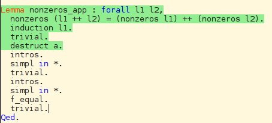
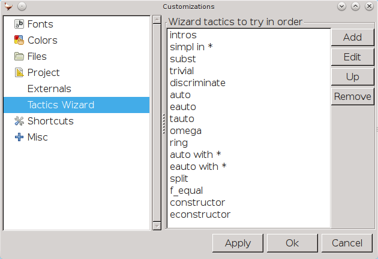

Today I want to highly suggest you to try out proof wizard, which can save you countless typing!
For example, in this case, I can get the rest tactic without writing them or knowing what I should type, by simply clicking "Trt Tactic"->"Proof Wizard" In coq menu!(Or even better, hotkey or icon on the toolbar)
This is the configuration of my proof wizard
As you can see, I spread the tactic into three group:
The first group is the tactic that perform lightweight simplify step (intros, simpl, subst)
The second group is subgoal solver, ordered by computational cost (trivial < auto < eauto)
The third group change the subgoal, and may do negative effect (constructor, f_equal)
Feel free to try my customization!
comments powered by Disqus